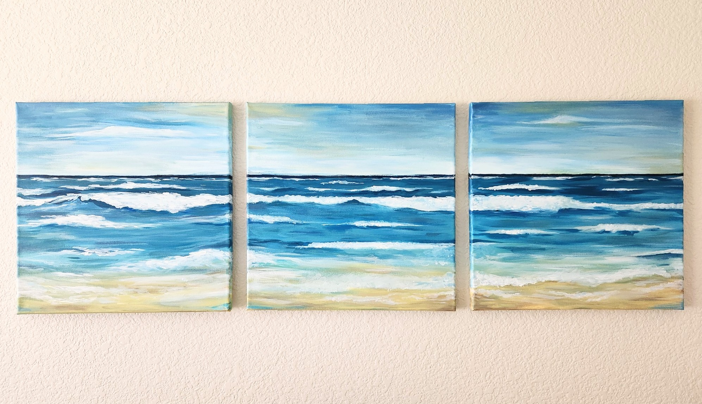
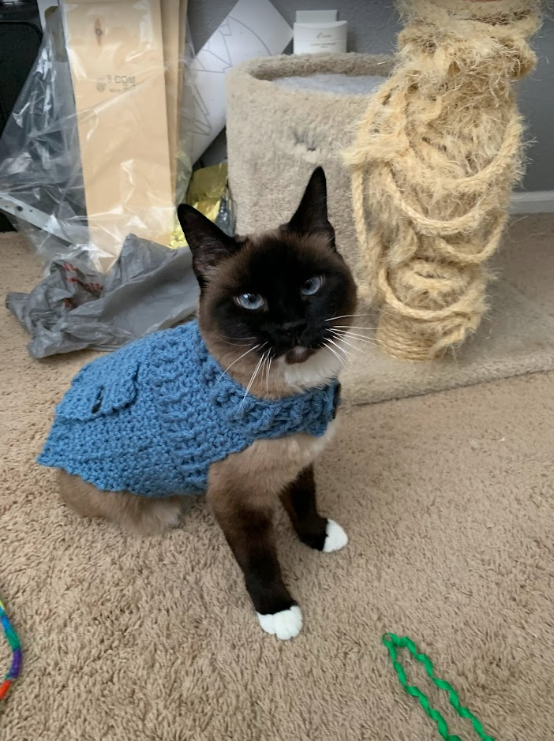
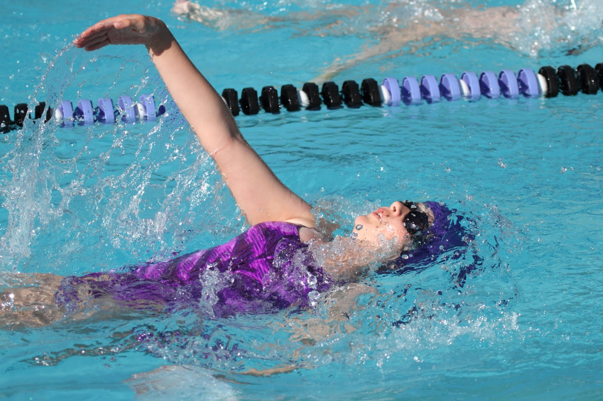

Anna started painting when she was 12 and continues to enjoy it in her
free time. She painted this set to decorate her room in her new apartment.

Crocheting is one of Anna's more relaxing hobbies, and she likes
learning new techniques whenever she can. She made this sweater for her cat, Sadie, just for fun.

Anna was on her school's swim team in middle school and has continued to
swim since then. She uses it as a form of workout, but also enjoys it as a hobby.